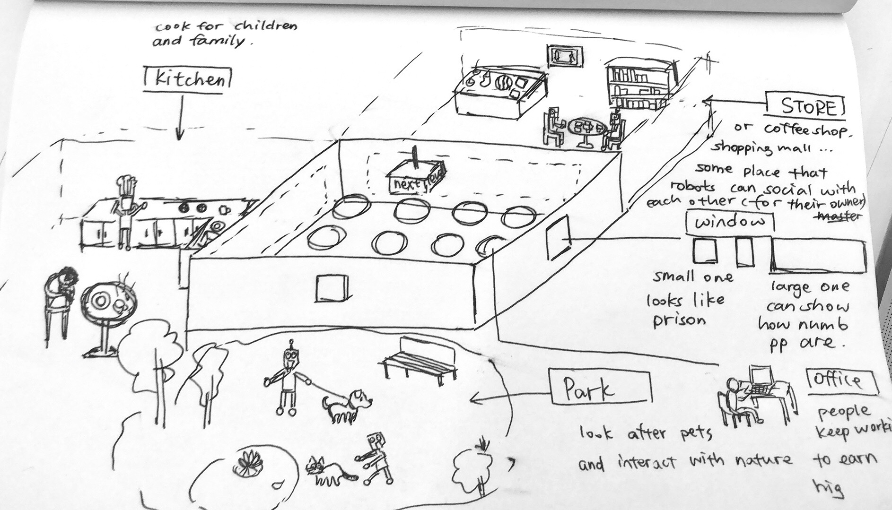

This is a VR project that critiques the fact that people are being more like working machines, while robots and AI are doing "time-consuming" works for us, which are actually the joy of life. We explored technology like 3D scanning and motion capture in our speculative work.
My roles: narrative design, VR interaction design, motion capture and model rigging.
In our speculative future, humans will turn to emotionless worker robots by working all day everyday & robots will turn to humans who have fun all the time by doing all the humans’ daily “boring and time consuming” tasks.
A large office room is in the middle of the scene. Workers are sitting in front of the desks and computers, doing their jobs. Outside the window, robots are cooking at home, walking dogs in the park, and doing social activities for their owners. People are numb and emotionless, paying no attention to the beautiful world and life, but only motivated to work all the time.


Combine different stages to a whole game.
Fix bugs.
Connection through the game.
Explore more forms of the game.